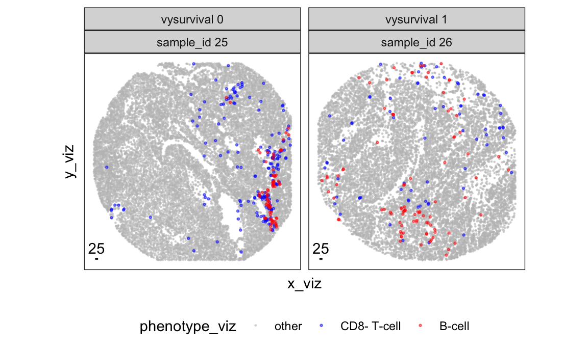
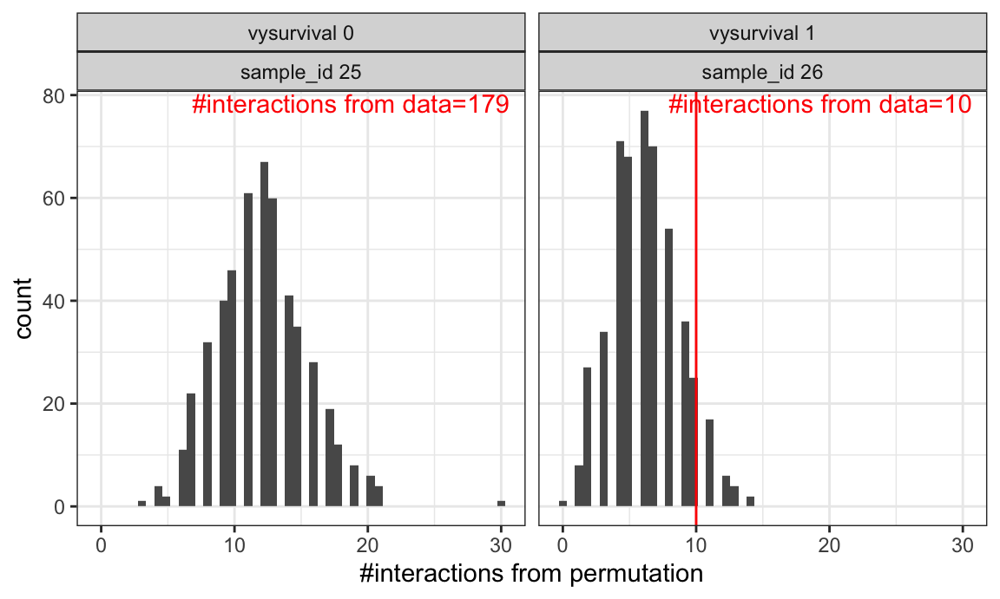
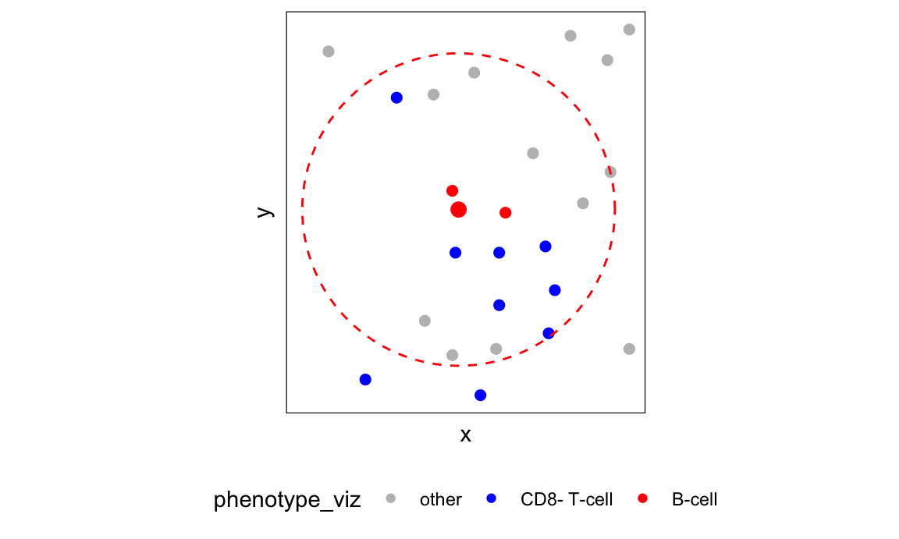

This module focuses on testing cell-cell interaction (colocalization)
using spatial regression, implemented in the R package
spaMM.
Load data and libraries.
# required packages
library(tidyverse)
library(spaMM)
theme_set(theme_bw() + theme(legend.position = "bottom"))
# load processed ovarian cancer data
load(url("https://github.com/julia-wrobel/MI_tutorial/raw/main/Data/ovarian.RDA"))We visualize two samples from the ovarian cancer dataset from VectraPolarisData and colocalization of B-cells and CD8- T-cells. We are interested in testing if this colocalization is significant (i.e., more interaction than random chance), and if it correlates with five-year survival.
# create five-year survival variable
ovarian_df <- ovarian_df %>%
mutate(vysurvival = case_when(
survival_time >= 60 ~ 1,
death == 1 ~ 0,
TRUE ~ NA_real_
))
# cell phenotype variable
ovarian_df <- ovarian_df %>%
mutate(phenotype = case_when(
phenotype_cd68 == "CD68+" ~ "macrophage",
phenotype_cd19 == "CD19+" ~ "B-cell",
phenotype_cd3 == "CD3+" & phenotype_cd8 == "CD8+" ~ "CD8+ T-cell",
phenotype_cd3 == "CD3+" & phenotype_cd8 == "CD8-" ~ "CD8- T-cell",
TRUE ~ "other"
))
# subset to two samples with moderate B-cell populations
subjs_subset <- ovarian_df %>%
filter(!is.na(vysurvival)) %>%
group_by(sample_id, vysurvival) %>%
filter(any(phenotype == "macrophage"),
any(phenotype == "B-cell"),
any(phenotype == "CD8+ T-cell"),
any(phenotype == "CD8- T-cell")) %>%
summarise(n_b_cells = sum(phenotype == "B-cell")) %>%
filter(n_b_cells < 100) %>%
group_by(vysurvival) %>%
arrange(-n_b_cells) %>%
slice(1) %>%
pull(sample_id)
ovarian_df_subset <- ovarian_df %>%
filter(sample_id %in% subjs_subset)
# visualize B-cells and CD8- T-cells across images
p_viz <- ovarian_df_subset %>%
group_by(sample_id) %>%
mutate(x_viz = x - min(x),
y_viz = y - min(y)) %>%
mutate(phenotype_viz = phenotype %>%
recode(
"CD8+ T-cell" = "other",
"macrophage" = "other") %>%
factor(levels = c("other", "CD8- T-cell", "B-cell"))) %>%
arrange(phenotype_viz) %>%
ggplot(aes(x_viz, y_viz, color = phenotype_viz, size = phenotype_viz)) +
geom_point(alpha = 0.5) +
scale_color_manual(values = c("B-cell" = "red",
"CD8- T-cell" = "blue",
"other" = "grey")) +
scale_size_manual(values = c("B-cell" = 0.5,
"CD8- T-cell" = 0.5,
"other" = 0.2)) +
facet_wrap(~ paste0("vysurvival ", vysurvival) +
paste0("sample_id ", sample_id), nrow = 1) +
# annotation for 25 micron scale bar
annotate(geom = "segment", x = 10, y = 10, xend = 35, yend = 10) +
annotate(geom = "text", x = 22.5, y = 10, label = "25",
hjust = 0.5, vjust = -0.5) +
coord_fixed() +
theme(legend.position ="bottom",
axis.text = element_blank(),
axis.ticks = element_blank(),
panel.grid = element_blank())
print(p_viz)
Here we adopt a permutation based approach to test for cell-cell interaction. This was used in e.g. histoCAT.
Red vertical lines indicate observed number of B-cell/CD8- T-cell interactions in each image.
Histogram indicates number of interactions from randomly permuting cell phenotype labels.
This approach can test for enrichment of interactions in each image, but is difficult to generalize across images, and to test for interaction correlation with phenotypes/outcomes.
threshold <- 25
# construct adjacency matrices for each image
l_mat_adj <- ovarian_df_subset %>%
group_split(sample_id) %>%
map(function(i_ovarian_df) {
mat_dist <- i_ovarian_df %>%
select(x, y) %>%
as.matrix() %>%
dist() %>%
as.matrix()
dimnames(mat_dist) <- list(i_ovarian_df$cell_id, i_ovarian_df$cell_id)
mat_adj <- mat_dist < threshold
# don't count cell as its own neighbor
diag(mat_adj) <- 0
return(mat_adj)
})
# visualize permuted interaction vs observed interaction
n_perm <- 500
set.seed(0)
df_interactions <- ovarian_df_subset %>%
group_split(sample_id) %>%
map2_dfr(l_mat_adj, function(i_ovarian_df, i_mat_adj) {
n_observe <- sum(i_mat_adj[i_ovarian_df$phenotype == "B-cell",
i_ovarian_df$phenotype == "CD8- T-cell"])
n_permute <- seq(1, n_perm) %>%
map_dbl(function(i_perm) {
i_ovarian_df_perm <- i_ovarian_df %>%
sample_n(size = nrow(.), replace = FALSE)
sum(i_mat_adj[i_ovarian_df_perm$phenotype == "B-cell",
i_ovarian_df_perm$phenotype == "CD8- T-cell"])
})
tibble(
sample_id = i_ovarian_df$sample_id[1],
vysurvival = i_ovarian_df$vysurvival[1],
n_observe = n_observe,
n_permute = n_permute
)
})
p_interactions <- df_interactions %>%
ggplot(aes(x = n_permute)) +
geom_histogram(bins = 50) +
geom_text(data = df_interactions %>% filter(!duplicated(sample_id)),
aes(label = paste0("#interactions from data=", n_observe)),
x = Inf, y = Inf,
vjust = 1.2, hjust = 1.05,
color = "red") +
geom_vline(data = df_interactions %>%
filter(sample_id == 26) %>%
filter(!duplicated(sample_id)),
aes(xintercept = n_observe), color = "red") +
facet_wrap(~ paste0("vysurvival ", vysurvival) +
paste0("sample_id ", sample_id), nrow = 1) +
xlab("#interactions from permutation")
print(p_interactions)
We can perform spatial regression on each B-cell’s local neighborhood, and the enrichment of CD8 T-cells in each neighborhood.
# calculate number of neighboring cells for each B-cell
df_nb <- ovarian_df_subset %>%
group_split(sample_id) %>%
map2_dfr(l_mat_adj, function(i_ovarian_df, i_mat_adj) {
# count the number of neighbors for each B-cell
i_df_nb <- i_mat_adj[i_ovarian_df$phenotype == "B-cell", ] %>%
apply(1, function(x) tapply(x, i_ovarian_df$phenotype, sum)) %>%
t() %>%
as.data.frame() %>%
rownames_to_column("cell_id") %>%
mutate(total = `B-cell` + `CD8- T-cell` + `CD8+ T-cell` + macrophage + other,
sample_id = i_ovarian_df$sample_id[1]) %>%
# remove singletons
filter(total > 0)
return(i_df_nb)
})
df_nb <- df_nb %>%
mutate(cell_id = as.numeric(cell_id)) %>%
left_join(ovarian_df_subset,
by = c("sample_id", "cell_id"))
# visualize the local neighborhood of a particular B-cell
df_one_cell <- df_nb %>%
filter(sample_id == 25) %>%
arrange(-`CD8- T-cell`) %>%
slice(1)
nbs <- l_mat_adj[[1]][as.character(df_one_cell$cell_id), ] %>%
keep(~.x > 0) %>%
names() %>%
as.numeric()
nbs <- c(nbs, df_one_cell$cell_id)
df_cell_viz <- ovarian_df_subset %>%
filter(sample_id == 25) %>%
filter(x < df_one_cell$x + 30 & x > df_one_cell$x - 30,
y < df_one_cell$y + 30 & y > df_one_cell$y - 30)
p_cell_viz <- df_cell_viz %>%
mutate(phenotype_viz = phenotype %>%
recode(
"CD8+ T-cell" = "other",
"macrophage" = "other") %>%
factor(levels = c("other", "CD8- T-cell", "B-cell"))) %>%
ggplot(aes(x = x, y = y,
color = phenotype_viz,
size = cell_id == df_one_cell$cell_id)) +
geom_point() +
scale_color_manual(values = c("B-cell" = "red", "CD8- T-cell" = "blue",
"other" = "grey")) +
# don't show size legend
scale_size_manual(values = c("TRUE" = 3, "FALSE" = 2), guide = "none") +
# draw a neighborhood circle around the center cell
annotate("path",
x = df_one_cell$x + 25*cos(seq(0,2*pi,length.out=100)),
y = df_one_cell$y + 25*sin(seq(0,2*pi,length.out=100)),
color = "red",
linetype = "dashed") +
coord_fixed() +
theme(axis.ticks = element_blank(),
axis.text = element_blank(),
panel.grid = element_blank())
print(p_cell_viz)
# calculate overall density of cells within each image
# used as "offset" terms in spaMM regression
df_density <- ovarian_df_subset %>%
group_by(sample_id) %>%
mutate(n_total = n()) %>%
group_by(sample_id, phenotype) %>%
summarise(density = n() / n_total[1]) %>%
pivot_wider(names_from = phenotype, values_from = density,
names_prefix = "density_")
df_nb <- df_nb %>%
left_join(df_density, by = "sample_id")spaMM regressionFit spatial regression using spaMM::fitme. Regression
terms:
vysurvival: the variable of interest.
Matern(1|x + y %in% sample_id): Matern spatial
correlation term.
offset(log(\`density_CD8- T-cell` / (1 - `density_CD8- T-cell`))):
offset term for “background” prevalence of CD8- T-cells.
fit_spaMM <-
fitme(
formula =
cbind(`CD8- T-cell`, total - `CD8- T-cell`) ~
# covariate of interest
vysurvival +
# spatial correlation term
Matern(1|x + y %in% sample_id) +
# offset term for "background" prevalence of CD8- T-cells
offset(log(`density_CD8- T-cell` / (1 - `density_CD8- T-cell`))),
data = df_nb,
family = binomial(link = "logit"),
fixed = list("nu" = 0.5),
method = "ML")
print(fit_spaMM)
## formula: cbind(`CD8- T-cell`, total - `CD8- T-cell`) ~ vysurvival + Matern(1 |
## x + y %in% sample_id) + offset(log(`density_CD8- T-cell`/(1 -
## `density_CD8- T-cell`)))
## Estimation of corrPars and lambda by ML (p_v approximation of logL).
## Estimation of fixed effects by ML (p_v approximation of logL).
## Estimation of lambda by 'outer' ML, maximizing logL.
## family: binomial( link = logit )
## ------------ Fixed effects (beta) ------------
## Estimate Cond. SE t-value
## (Intercept) 2.303 0.3996 5.764
## vysurvival -2.002 0.6039 -3.316
## --------------- Random effects ---------------
## Family: gaussian( link = identity )
## --- Correlation parameters:
## 1.nu 1.rho
## 0.50000000 0.01121604
## --- Variance parameters ('lambda'):
## lambda = var(u) for u ~ Gaussian;
## x + y %in. : 1.116
## # of obs: 171; # of groups: x + y %in., 171
## ------------- Likelihood values -------------
## logLik
## logL (p_v(h)): -161.5562fitmeMany of these are detailed in the documentation
?HLfit.
Fixed effects: estimated coefficients. The conditional standard errors are not very informative, as they do not account for the uncertainty in the random effects term. Below we will perform inferenence on these parameters using likelihood ratio tests instead.
Random effects:
Matern correlation parameters (see ?MaternCorr for
more details):
nu: smoothness parameter for the Matern correlation
function. We pre-fixed this at 1/2.
rho: estimated correlation length for the Matern
correlation function. This is the parameter that controls the range of
the spatial correlation.
Under these specifications, the Matern correlation for two cells
with distance d is exp(-rho * d). See
?MaternCorr for more details.
Variance of spatial correlation (lambda):
Details in ?`random-effects`.
lambda is the variance of i.i.d normal random
variables, which are then multipled by a Cholesky decomposition of the
Matern correlation to generate spatially correlated random
effects.
We perform LRT on fixed effects by contrasting the fully specified model versus “null” models.
vysurvival = 0), accounting for
the “background” chance of CD8- T-cells in the images.fit_spaMM_null1 <-
fitme(
formula =
cbind(`CD8- T-cell`, total - `CD8- T-cell`) ~
# null model with no intercept
0 + vysurvival +
Matern(1|x + y %in% sample_id) +
offset(log(`density_CD8- T-cell` / (1 - `density_CD8- T-cell`))),
data = df_nb,
family = binomial(link = "logit"),
fixed = list("nu" = 0.5),
method = "ML")
1 - pchisq(2 * (logLik(fit_spaMM) - logLik(fit_spaMM_null1)), df = 1)
## p_v
## 0.002247611vysurvival is whether or not this
enrichment is correlated with five-year survival.fit_spaMM_null2 <-
fitme(
formula =
cbind(`CD8- T-cell`, total - `CD8- T-cell`) ~
# null model with no vysurvival
1 +
Matern(1|x + y %in% sample_id) +
offset(log(`density_CD8- T-cell` / (1 - `density_CD8- T-cell`))),
data = df_nb,
family = binomial(link = "logit"),
fixed = list("nu" = 0.5),
method = "ML")
1 - pchisq(2 * (logLik(fit_spaMM) - logLik(fit_spaMM_null2)), df = 1)
## p_v
## 0.007631282